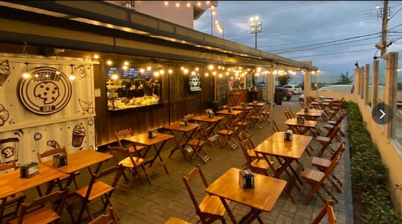
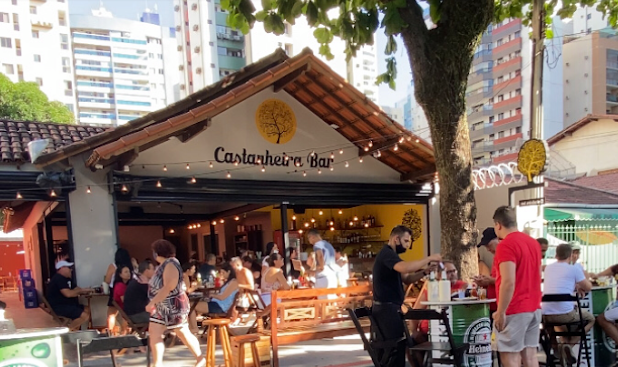
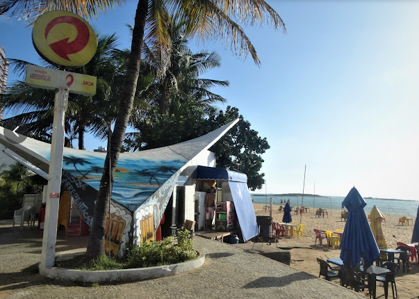
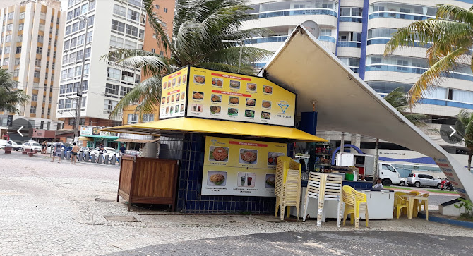
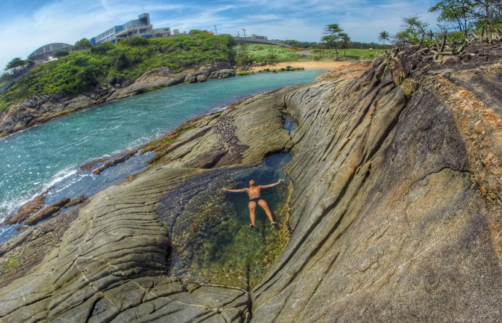
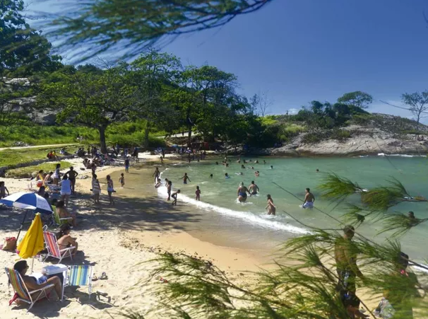

Sobre a Praia da sereia
A Praia dos Corais é uma joia do litoral capixaba, conhecida por sua areia branca e fina, águas cristalinas ideais para mergulho e uma variedade incrível de vida marinha. Vários quiósques e restaurantes por perto!
Além do calçadão temos bares, quiósques e a nossa praia secreta que não e mais tão secreta rsrs..





